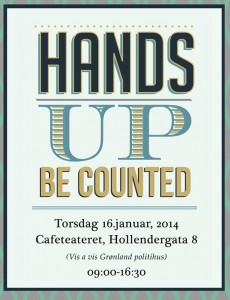

HANDS UP, BE COUNTED - Kulturrådsseminar på Cafeteatret
- Kategori:
- Åpne arrangementer
Åpne arrangementer
Åpent for alle som jobber innen kulturfeltet, inkludert studenter. - Dato:
- 16.01.2014 til 16.01.2014
- Start kl :
- 09:00
- Slutt kl :
- 16:30
- Adresse:
- Cafeteatret / Nordic Black Theatre, Oslo
 Seminar om flerkulturelle utøvere og scenekunstbransjen. Arrangert på initiativ fra Kulturrådet i samarbeid med Norsk Skuespillerforbund, Nordic Black Theatre og Norsk Skuespillersenter.
{kind=link}
Ta en kikk på det spennende programmet, og meld deg på her!
Programmet live-streames her: https://new.livestream.com/accounts/3722443/events/2689162
Vi starter det nye året med inspirasjon fra en ny generasjon kunstnere som velger sine egne veier. Mangfoldet i kulturlandskapet finnes, men er ikke synlig nok på scenene.
Hva kan vi gjøre med det?
Du som utøver kan gjøre deg sett og hørt, samt få praktiske innspill fra de som jobber i kulturfeltet.
Denne dagen er også for kulturinstitusjonene som ønsker å bli kjent med nye aktører og strømninger i det norske scenekunstfeltet.
"Norske regissører må bli flinkere til å bruke skuespillere med minoritetsbakgrunn i vanlige roller. Og folk med innvandrerbakgrunn må begynne å utdanne seg til manusforfattere, regissører og skuespillere. Så lenge filmbransjen er dominert av mennesker med etnisk norsk bakgrunn blir historiene som de er."
Asta Busingye Lydersen, Afropolitt, Aschehoug, 2013
Bidragsytere:
Anne Aasheim, Mehdi Ashtiani, Ahmed Dadi, Odd Are Berkaak, Hanna Mjåvatn, Mia Habib, Thomas Talawa Prestø, Maria Ima Karlsen, Hannah Wozene Kvam, Shanti Brahmachari, Hauk Heyerdahl, Yrjan Svarva, Zeze Kolstad, Øystein Brager, Evelyn Rasmussen, Åshild Andrea Brekke, Nordic Black Xpress, Kunsthøgskolen i Oslo, Høgskolen i Nord Trøndelag, Akademi for scenekunst, Det Multinorske.
Ta også en kikk på facebooksiden til seminaret!